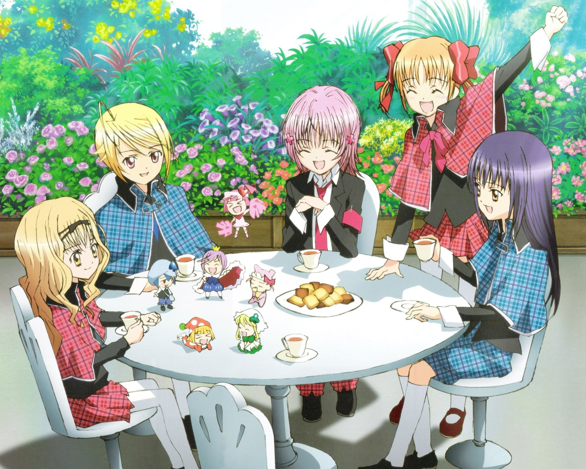

<DOCTYPE html>
<html lang = "ja">
<head>
<meta charset="utf-8">
<meta name=”viewport” content=”width=device-width,initial-scale=1.0″>
<title>しゅごキャラ</title>
<link rel="stylesheet" href="syugokyara.CSS">
<style>
body{
  padding: 60px;
  margin:  60px;
  background-image: url("3ec862b93a8e4d199b13b6d2d25f3470.jpg");
  background-repeat: no-repeat;
  background-attachment: fixed;
  background-size: cover;
}

</style>
</head>
<body>

<h1 align="center">あらすじ</h1> 
<br><h2  align="center"> 
<br>「クール&スパイシー」と評判の小学生・日奈森あむは、通っている聖夜学園の児童だけではなく、
<br>他校生からも尊敬されたり恐れられたりしているが、実際は意地っ張りで口下手で恥ずかしがり屋な
<br>ごく普通の少女である。ある日、彼女は「どうかあたしに、なりたい自分に生まれ変わるための勇気を
<br>ください」と願うと、翌朝彼女のベッドの中にチェック柄の3つのたまごが現れ、中からラン、ミキ、スゥの
<br>3人のしゅごキャラが生まれた。3人はともに彼女の「なりたい自分」が形になったものだった。</br>
</body>

</html>